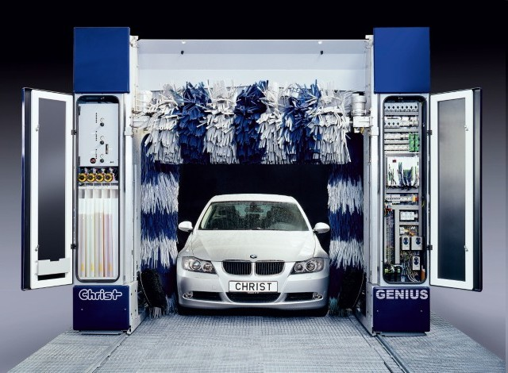

Щеточная
До недавнего времени традиционными материалами, из которых изготавливались щетки для автоматических моек, были текстиль и полиэтилен, но появившиеся сравнительно недавно на рынке вспомогательных моющих средств щетки из различных видов вспененного полиэтилена уже начали теснить своих предшественников.
Вспененный полиэтилен - это мягкий и в то же время прочный, стойкий к истиранию материал, бережно удаляющий грязь с поверхности любого, даже самого требовательного покрытия. По результатам проведенных четыре года назад немецким автоклубом ADAC испытаний вспомогательных моющих материалов, щетки из вспененного полиэтилена были признаны победителями. Позднее на практике было доказано, что автомобильное лакокрасочное покрытие способно выдержать без ущерба более трехсот моек такими щетками в автоматическом режиме.
Но и текстильные или с полиэтиленовым ворсом (с характерными распушенными кончиками-кисточками) щетки при соблюдении правил их эксплуатации способы хорошо отмыть автомобиль от грязи, не причиняя вреда покрытию. Только грязный или изношенный ворс таких щеток может действительно навредить кузову.

Чтобы перестраховаться от попадания в неприятную ситуацию, лучше всего пользоваться услугами уже проверенных или недавно открытых автомоек. Ну а если необходимость все-таки прижмет, то прежде чем «нырнуть» в портал или туннель незнакомой мойки не поленитесь зайти и поинтересоваться качеством установленных ней щеток, а заодно и взглянуть на работу обслуживающего персонала.
Также рекомендуем
Наномойка Антидождь Инновационный автошампунь Полировка «Жидкое стекло»